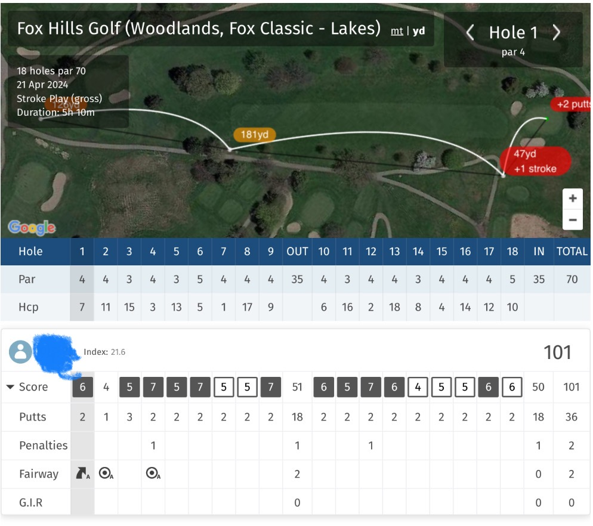

(Written by Claude 3.0 Opus)
On a long-awaited holiday, I woke up with excitement. Today's plan was just one thing - golf. As I packed my golf bag, I called my friend JY, who would be joining me for the round. "JY. Are you all ready? Don't be late and let's meet at Fox Hills Classic by 9 o'clock." "Okay, got it. It's been so long since we played, I'm already excited. See you at the golf course then!" I hung up the phone and got in the car, heading to the golf course. The green grass unfolding outside the car window was dazzling. Fox Hills Classic was a really great golf course. On top of that, the green fee was only $30 per person, so it was a place I could come often without burden. The price even included the cart fee, so I wondered if there would be another place this affordable. When I arrived at the golf course, JY was already waiting in front of the clubhouse. We greeted each other with excitement and loaded our golf bags onto the cart together. At that moment, two men approached us from the front and struck up a conversation. "Hi, I'm Greg. Nice to meet you!" "Hi, I'm Ramen." I was a little startled to be joined by unfamiliar faces. Ramen seemed to be of Indian descent, and Greg seemed to be American. "Hi, I'm JK. Nice to meet you!" "Hi, I'm JY" The four of us then headed to the first hole. Greg was quite skilled. But from the first tee shot, Ramen's strange behavior caught my eye. He was too slow. Ramen repeated multiple practice swings on almost every shot. My frustration grew, but I had no choice but to hold it in. In the end, we were able to finish 18 holes after 5 hours, much later than planned. When we tallied the scores, I had shot 10 strokes more than usual. ㅠㅠ  But the weather was really nice. A moment to fully enjoy spring after a long time.. Today was another day like this..
Go Back to Brunch Page